SESSION 03 · 기획
내 주변에서
물음표(?)와 느낌표(!)
찾기
복합커뮤니티 송정다누리 · 14:00 – 16:00
INSTRUCTOR · 강사 소개
위서영입니다.
위트 콘텐츠연구소 대표
마을의 이야기를 기술로 잇는 일을 해요.
- 2014양림동 마을잡지 「양림사이다」 기자단
- 2018광주광역시도시재생공동체센터 · 마을 기록 아카이빙
- 2021「도시기록충 – 운암3단지」 재개발 전 기록 사진
- 2024「고쳐볼 지도」 광주 동구 수리수선 지도

TODAY · 오늘 할 일
오늘은 이렇게 해요.
- ①여는 이야기 · 왜 기록할까?15분
- ②경험 · 사진첩에서 3장 고르기20분
- ③물음표(?) → 느낌표(!) · 활동지 ①25분
- ④쉬는 시간10분
- ⑤수집 · 모아 보고 싶은 방법 ○ / ★25분
- ⑥내 책 8쪽 미리 그리기20분
- ⑦닫기 · 4차시 준비5분
2시간 · 복합커뮤니티 송정다누리
GOAL · 학습목표
오늘이 끝나면
이렇게 할 수 있어요.
- 0115가지 기록 방법이 사진·영상·소리·글·그림·지도·자료로 남는다는 것을 알아요.
- 02내 사진에서 물음표(?)를 찾고, "아하, ~구나"로 느낌표(!)를 말해요.
- 03내 책 8쪽의 제목과 쪽마다 넣을 것을 미리 그려요.
OPENING
오늘은 잘 찍는 법이 아니라,
내 눈에 뭐가 걸렸는지
찾아보는 날이에요.
경험 → 수집 → 물음표 ? → 느낌표 !
"사소한 것들을 발견하는 힘"

표지 이미지 출처: 교보문고
WHY · 왜 기록할까요?
아무것도 아닌 것을 특별한 것으로.
무엇을
나나의 하루를 모아요
동우리 동네의 하루를 모아요
종이 조각
나영수증, 택배 속 스티커
동가게 전단지, 방앗간 봉투
매일 가는 곳
나매일 가던 카페의 휴지
동경로당 게시판, 시장 단골집
지나치던 것
나지하철 구석의 안내판
동버스정류장 이름, 옛 간판
『매일의 영감 수집』의 방법 그대로, 마을 버전으로!
WHY · 기록하면 생기는 힘
동네를 기록하면
세 가지 힘이 생겨요.
- 관찰력매일 지나던 골목이 다시 보여요. 안 보던 것을 보게 되는 힘.
- 발견력조각을 이으면 동네 이야기가 돼요. 맥락을 잇는 힘.
- 디깅력이웃에게 묻고 옛 자료를 찾아 넓혀요. 깊이 파고드는 힘.
기록하지 않으면, 바뀌는 동네는 기억에서도 사라져요.
INSPIRATION NOTE · 영감 수집 노트 예시
오일 박스 하나에서
간판까지.
- ?
- 상자 속 할아버지는 누구지? 왜 얼굴을 넣었을까?
- !
- 해장국집 간판 속 할머니 사장님 사진처럼, 얼굴이 믿음을 주는구나!
우리 동네에선 → 간판 속 얼굴은 누구일까?
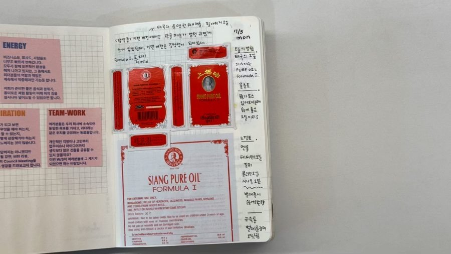
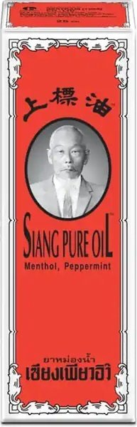
INSPIRATION NOTE · 15가지 방법과 이어 보기 1/2 · 출처: 매일의 영감수집 워크숍(oli·ilo) workshop.cheerleaderolive.life
모으고, 그리고, 받아 적기.
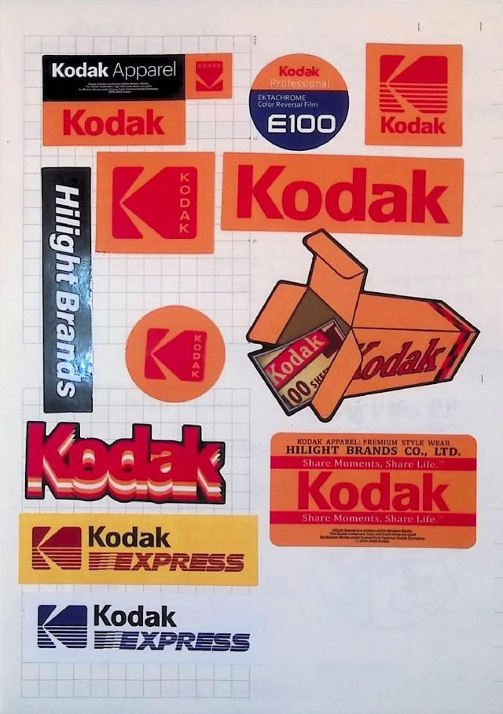
사진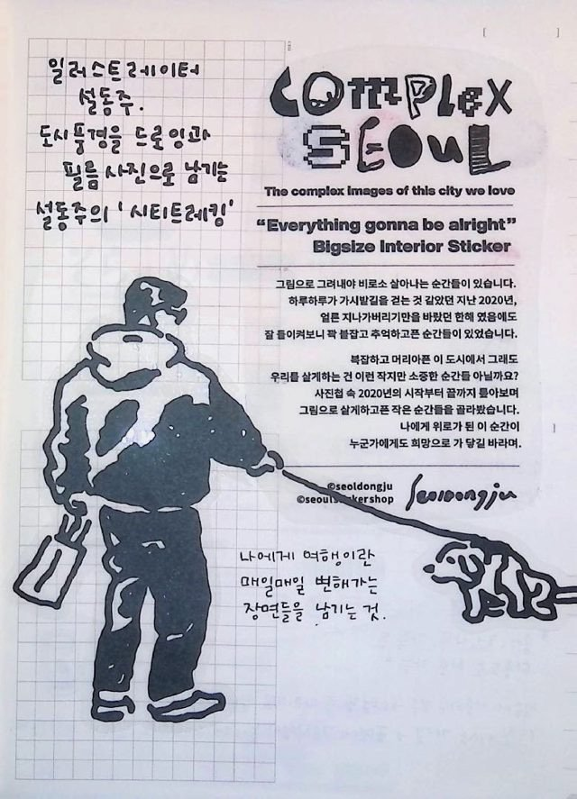
그림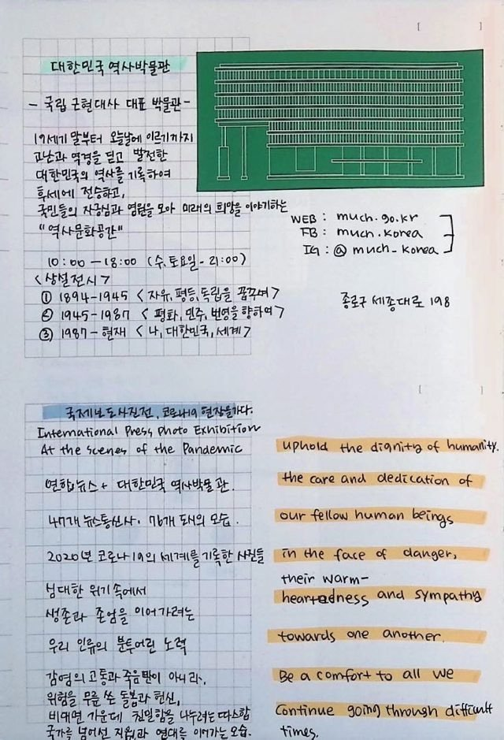
글INSPIRATION NOTE · 15가지 방법과 이어 보기 2/2 · 출처: 매일의 영감수집 워크숍(oli·ilo) workshop.cheerleaderolive.life
찍고, 붙이고, 물어보기.
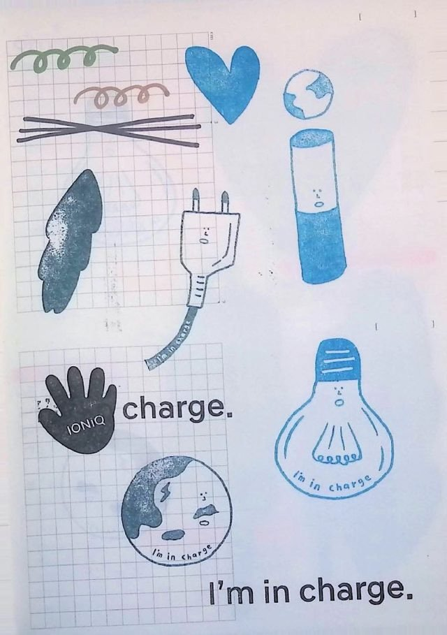
그림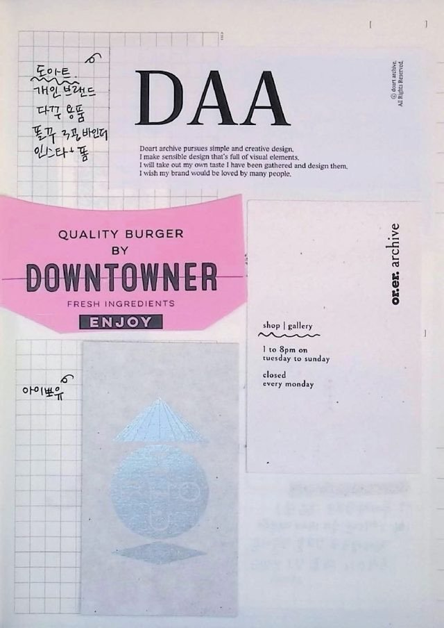
모으기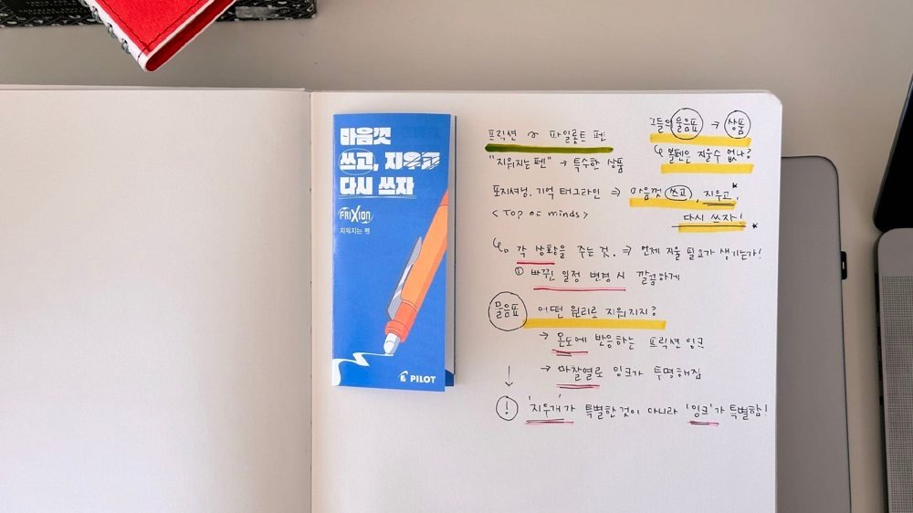
글RECAP · 지난 수업 돌아보기
기록 방법 15가지, 기억나세요?
- 01오래된 간판사진
- 02골목 색깔사진
- 03지금 모습 그리기그림
- 04문질러 본뜨기그림
- 05바닥 무늬사진
- 06틈새 풀꽃사진
- 07고양이·새 따라가기영상
- 08집 앞 화분사진
- 09옛 신문·기사자료
- 10옛 하늘(항공)사진자료
- 11볕·바람·그늘글
- 12동네 소리 글로 적기소리
- 13이웃 이야기소리·글
- 14동네 말 모으기글
- 15걸은 길 그리기지도
사진영상소리글그림지도자료 기록은 이 일곱 가지 모양으로 남아요.
LOCAL ARCHIVIST · 학익동지킴이
사라지는 동네를
기록하는 사람.
인천 학익동에서 자란 곽은비 님. 재개발로 골목과 이웃이 사라지기 시작하자, 4년 전부터 자기 동네를 기록해요.
"역사 없는 동네는 없어요."

LOCAL ARCHIVIST · 이렇게 기록해요
학익동지킴이의
기록법.
- 사진차가 못 들어가는 골목까지 걸으며 찍기
- 이야기40년 넘게 산 주민의 인생 이야기 듣기
- 수집동네의 오래된 물건 모으기
- 나눔주민이 보낸 옛 앨범 사진을 함께 올리기
- 몸옛 학교 체육복을 입고 동네 걷기
- 책카드뉴스 · 독립 출판물 · 전시 「기억의 모양」
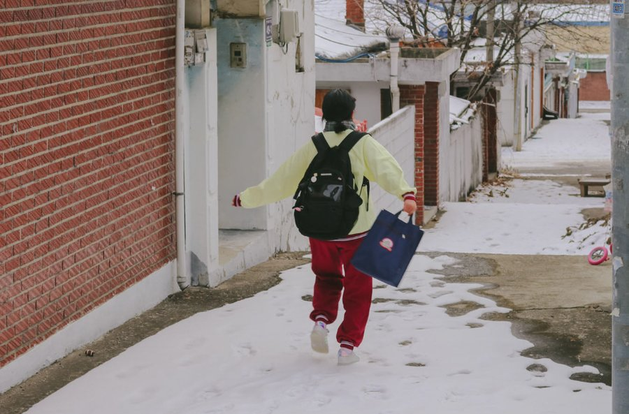
MEMORY PLANT · 기억발전소
내 인생을
내가 책으로.
- 누가기억을 기록하는 문화예술 사회적 기업
- 사진책「기억의 지도」 50플러스 세대가 8주 동안 직접 기록 → 인생 사진책 100권 넘게
- 전시「마을 아카이브전」 주민·마을이 만든 자료 300여 종을 모아 전시하고 책으로
대신 써 주지 않아요. 내가 만들어요.

ARCHIVE · 실제 기록 ① 눈으로
사진 · 영상 기록
 사진
사진재래시장 사진시장 풍경을 찍은 기록사진. 사진마다 "기록물 제목"이 붙어 있어요.
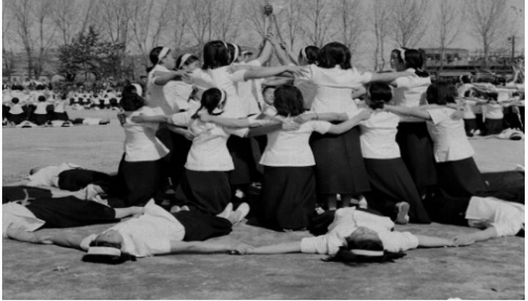
사진학교 운동회 사진무슨 행사였는지, 몇 년도인지 기록물 제목에 적혀 있어요. 우리 동네 운동회도 기록이 돼요.
 영상
영상대한뉴스 「호남선 복선 개통」1988년, 장성~송정리 구간 복선 개통을 담은 뉴스 영상. "송정리"로 찾으면 나와요.
기록 + 언제·어디·누가 한 줄 = 아카이브
ARCHIVE · 실제 기록 ② 귀로
소리 · 이야기 · 동네 말
 소리
소리「우리의 소리를 찾아서」MBC 라디오가 전국 800여 마을을 찾아가 주민들의 노래를 녹음했어요. 약 1만 8천 곡이 아카이브로 남았어요.
 이야기
이야기5·18 구술채록그날을 겪은 사람들이 자기 말로 들려준 이야기를 영상과 글로 남겨요. 이름·얼굴은 본인 허락을 받고 공개해요.
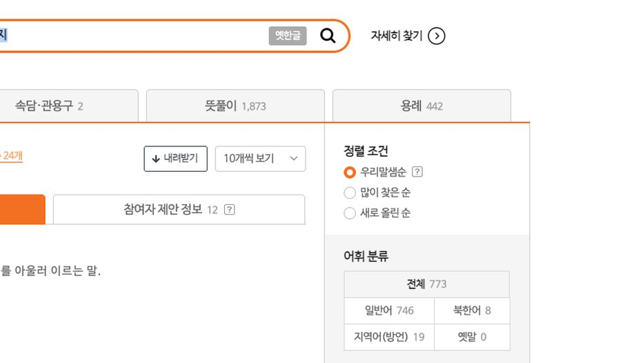
동네 말우리말샘 "지역어(방언)"국민이 함께 만드는 사전. 지역에서 쓰는 말을 "지역어(방언)"로 따로 모아요.
사람 목소리·얼굴은 허락받은 것만 남겨요.
LISTEN · 수집된 소리 듣기 · MBC 「한국민요대전」
우리 광산구 소리도
녹음돼 있어요.
- 1990모심는소리 · 삼도면 송학리 봉학앞소리 최계선(1913년생)
- 1990줄메고다니는소리 · 대촌면 칠석리 하칠석앞소리 정남진(1937년생)
- 1990상여소리 · 삼도면 송학리 봉학앞소리 서상호(1925~1992)
누르면 그때 그 목소리를 바로 들을 수 있어요.
전국 2,607곡 · 한국민요대전 음반자료(urisori.co.kr)
ARCHIVE · 실제 기록 ③ 찾아서 · 지도로
옛 신문 · 지도
 자료
자료옛 신문에서 "송정리"1920~1999년 신문에서 "송정리"가 3,304건. 1968년 「광주–송정리 사이 고속도로 건설 지시」 같은 기사가 나와요.
 지도
지도오픈스트리트맵 신흥동시민들이 걸으며 함께 그리는 지도. 4차시 산책 길 5개도 이 지도 자료로 그렸어요.
찾은 자료는 "어디서 찾았는지"까지가 기록이에요.
EXPERIENCE · 경험
사진첩에서
3장 고르기.
지난 한 달 사진 중 마음이 가서 찍은 것 3장.
짝에게 "왜 찍었는지" 1분씩 말해요.
활동지 ① 조각 칸에 무엇인지만 적어요.
바로 이어서 ? 와 ! 를 붙여요.
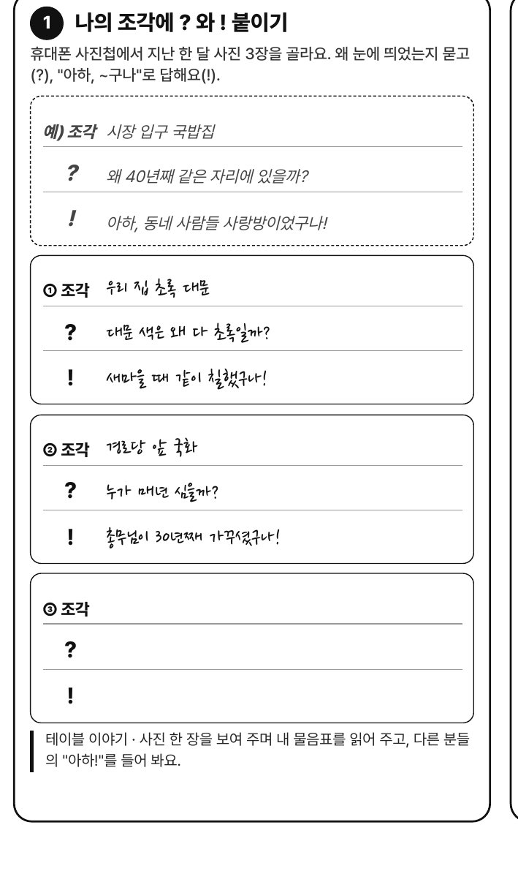
? → ! · 활동지 ① 에 이어서
고른 조각에
? 와 ! 를 붙여요.
- ?
- 조각마다 "왜 눈에 띄었을까?" 묻기
- !
- "아하, ~구나"로 한 줄 답하기
3장 중 1장만 해도 괜찮아요.
? 물음표 · 조각에 묻는 네 마디
물음표는
네 마디면 돼요.
- 왜대문 색은 왜 다 초록일까?
- 언제이 국밥집은 언제부터 여기 있었을까?
- 누가경로당 앞 국화는 누가 심을까?
- 어디골목 고양이는 낮에 어디서 잘까?
내 조각을 보며 "어? 이건 왜 이럴까?" 한 번만.
? → ! · 활동지 ① 예시
조각 → ? → !
시장 입구 국밥집
?왜 40년째 같은 자리에 있을까?
!동네 사람들 사랑방이었구나!
우리 집 초록 대문
?대문 색은 왜 다 초록일까?
!새마을 때 같이 칠했구나!
경로당 앞 국화
?누가 매년 심을까?
!총무님이 30년째 가꾸셨구나!
골목 끝 평상
?왜 저기에만 평상이 있을까?
!여름 그늘이 동네 쉼터였구나!
! 를 모르면 짐작도 좋아요. 답 못 찾은 ? 는 4차시 산책에 들고 가요.
? → ! · 테이블 이야기
한 사람씩,
내 ? 를 읽어 주세요.
- 01사진 한 장을 보여 주며 내 물음표 읽기
- 02다른 분들의 "아하!"를 들어 보기
- 03마음에 드는 ! 를 활동지 ① 에 적기
여기서 나온 ? 와 ! 가 내 책 2쪽 · 7쪽이 돼요.
BREAK
쉬는 시간.
차 한 잔, 물 한 잔 하고 오세요.
COLLECT · 수집
○ 여러 개,
★ 딱 하나.
눈으로 찍기 · 손으로 그리기 · 귀로 듣기 · 몸으로 느끼기 · 찾아서 담기
같은 ★를 고른 분과 4차시 산책 짝이 돼요.
활동지 ② 에 표시해요.
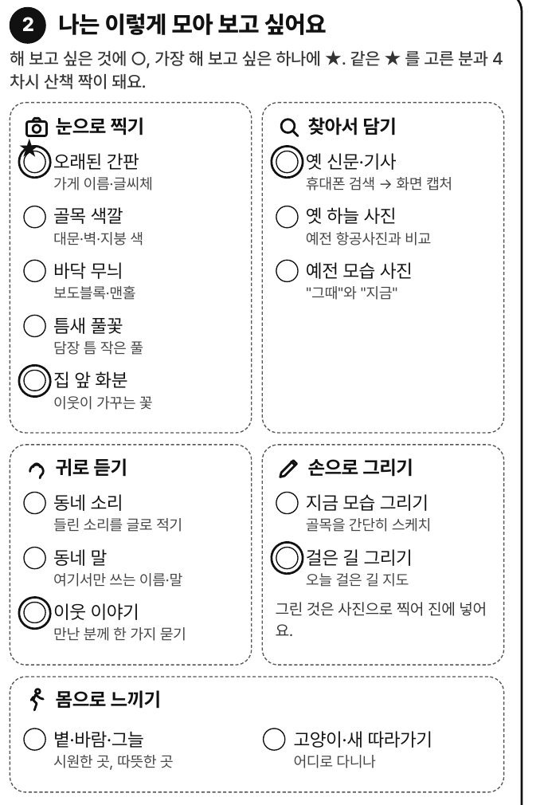
ZINE · 진이 뭐예요?
진(zine)은
내가 만든 작은 책.
직접 만들고, 조금 찍어서, 손으로 나눠요.
"나만 좋아할 것 같은 사소한 이야기"가 주인공.
인천 배다리 헌책방 거리의 「언노운 북 페스티벌」

ZINE · 이런 이야기도 책이 돼요 1/4 · 출처 언노운 북 페스티벌 @patchwork_baedari
옥상도, 이발소도, 후루룩 소리도.
 사진
사진 이야기
이야기 소리
소리ZINE · 이런 이야기도 책이 돼요 2/4 · 출처 언노운 북 페스티벌 @patchwork_baedari
낙서도, 달력도, 김치냉장고도.
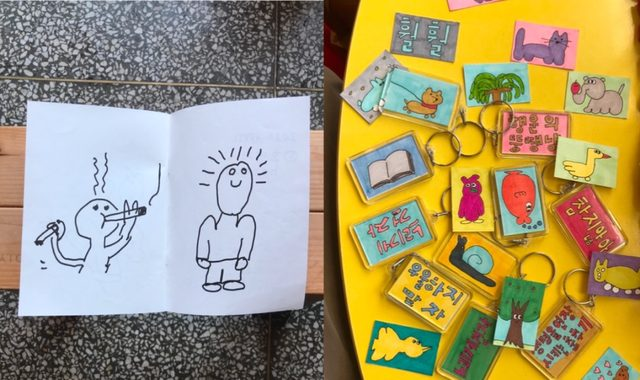
그림 모으기
모으기 사진
사진ZINE · 이런 이야기도 책이 돼요 3/4 · 출처 언노운 북 페스티벌 @patchwork_baedari
내 기억, 내 이웃도.
 기억
기억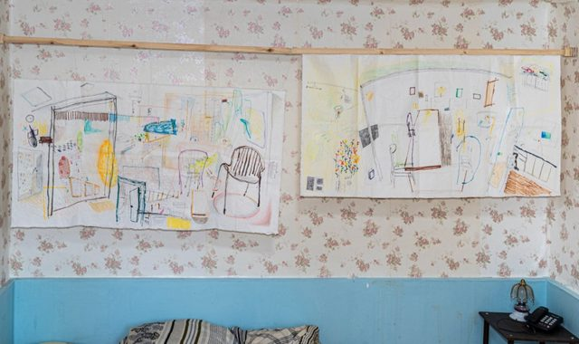
그림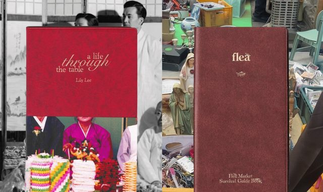
모으기ZINE · 이런 이야기도 책이 돼요 4/4 · 출처 언노운 북 페스티벌 @patchwork_baedari
내 요령, 내 상상도.
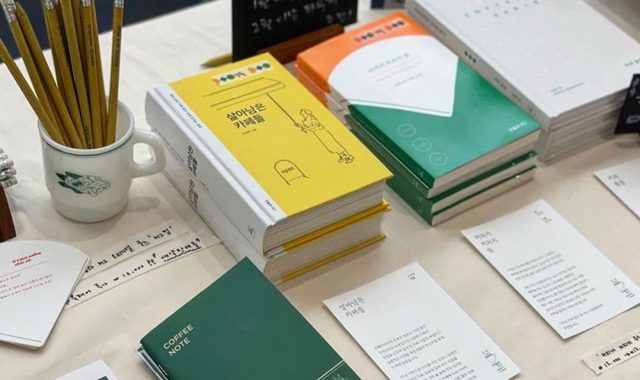
글 글
글 상상
상상PLAN · 내 책 기획
내 책 8쪽
미리 그리기.
- 01제목 (가안)
- 02쪽마다 넣고 싶은 것
- 03내 책 한 줄 소개
- 04산책 미션 카드 — 점선 따라 오리기
글자 몇 개만 적어도 돼요. 4차시에 바꿀 수 있어요.


NEXT · 4차시 미리 보기
4차시는 이렇게 해요.
- ①출발 준비 · 미션 카드 읽기10분
- ②동네 산책 · 테이블마다 한 길40분
- ③돌아와 쉬기 · 사진 8장 고르기10분
- ④휴대폰으로 웹 진 만들기50분
- ⑤서로 넘겨 보기 · 다 만들었어요10분
신흥동행정복지센터 2층 · 14:00 – 16:00
NEXT · 4차시 산책 길
테이블마다
한 길씩 걸어요.
- 1송정공원 한 바퀴 · 0.6km
- 2금봉산 아랫길 · 1.4km
- 3송정동초 담장길 · 1.4km
- 4상무대로 건너 옛 송정 · 1.5km
- 5철길 옆 골목 · 1.1km
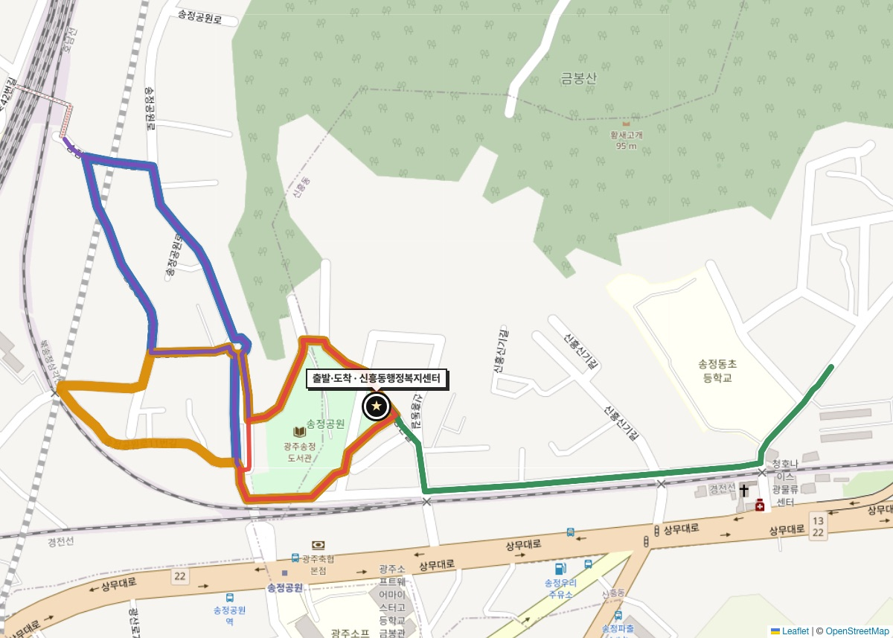
NEXT · 4차시 웹 진
돌아와서
휴대폰으로 진 만들기.
오늘 그린 8쪽 계획대로, 산책에서 찍은 사진을 넣어요.
사진 · 자막 · 스티커로 한 쪽씩.
이런 책이 나와요!
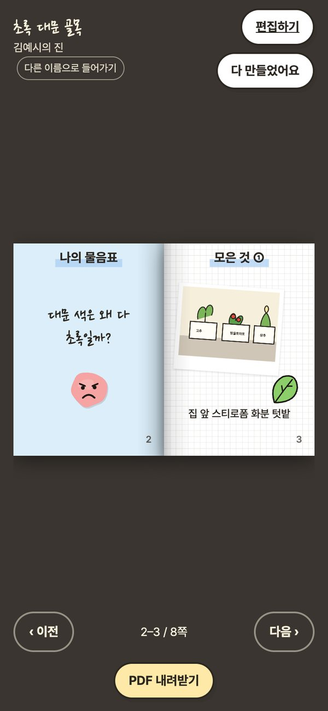
NEXT TIME
다음 시간엔
밖으로 나가요.
휴대폰 충전 · 편한 신발 · 산책 미션 카드
4차시 · 신흥동행정복지센터 2층